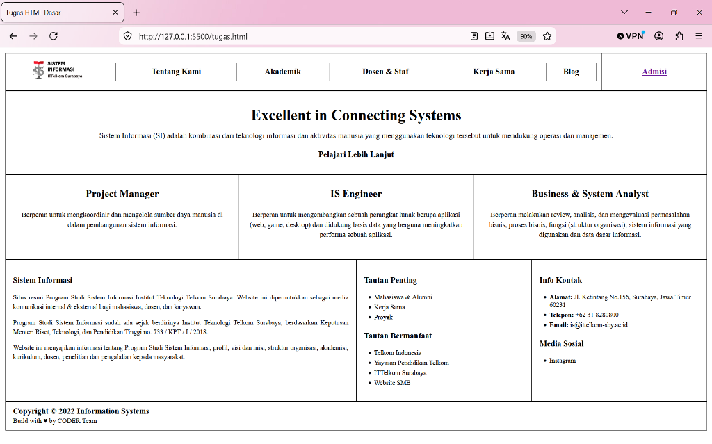
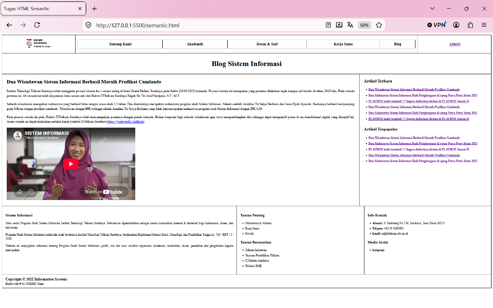
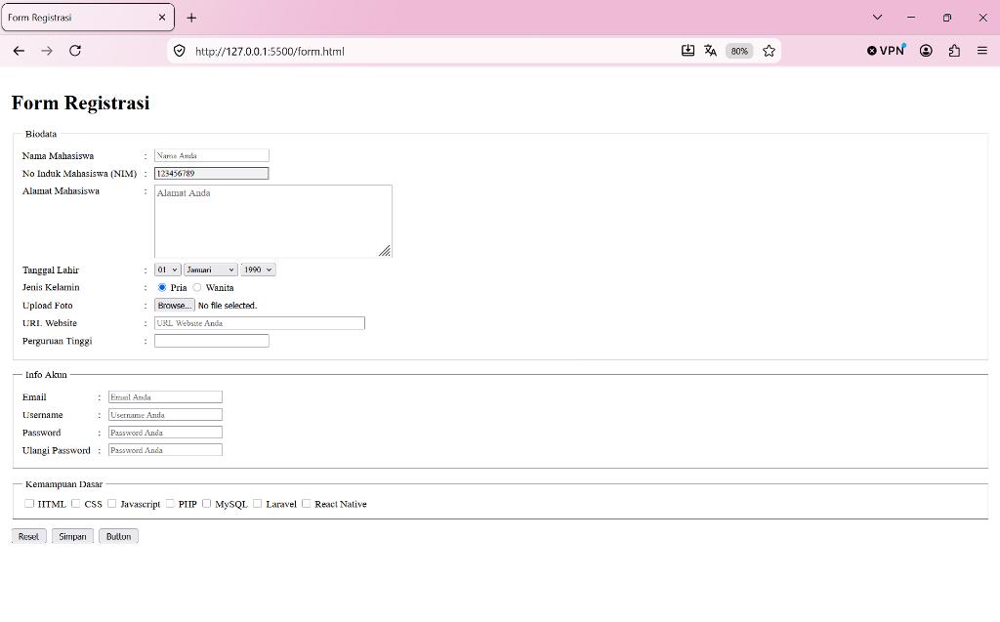

LAPORAN PRAKTIKUM
PENGEMBANGAN APLIKASI WEB
MODUL 1: PENGENALAN HTML (TINGKAT DASAR & LANJUT)
| Nama |
: |
[Nama Mahasiswa] |
| NIM |
: |
[NIM Mahasiswa] |
| Kelas |
: |
S1 Sistem Informasi |
| Dosen Pengampu |
: |
Purnama Anaking, S.Kom., M.Kom. |
PROGRAM STUDI S1 SISTEM INFORMASI
TELKOM UNIVERSITY SURABAYA
2026
BAB I: PENDAHULUAN
1.1 Latar Belakang
Hypertext Markup Language (HTML) merupakan pondasi utama dalam pembangunan struktur halaman pada World Wide Web (WWW). HTML bertugas memberikan kerangka dan mendefinisikan elemen-elemen informasi seperti teks, gambar, tabel, formulir, hingga berkas multimedia agar dapat diterjemahkan secara visual oleh web browser. Pemahaman yang kokoh terhadap struktur dasar, elemen semantik modern (HTML5), dan penanganan masukan pengguna melalui formulir merupakan kompetensi esensial bagi mahasiswa Program Studi Sistem Informasi dalam rekayasa perangkat lunak berbasis web.
1.2 Tujuan Praktikum
- Mahasiswa mampu memahami struktur hierarki dasar dokumen HTML (DOCTYPE, html, head, body).
- Mahasiswa mampu mengimplementasikan elemen-elemen dasar HTML seperti heading, paragraf, pemformatan teks, list, multimedia, dan tabel bersarang (*nested table*).
- Mahasiswa mampu menerapkan tag Semantic HTML5 (header, nav, main, article, aside, footer) dan penyematan video melalui tag iframe.
- Mahasiswa mampu merancang antarmuka formulir registrasi interaktif menggunakan fieldset, legend, dan berbagai tipe kontrol input.
- Mahasiswa mampu mempublikasikan dokumen web ke layanan hosting publik (GitHub Pages / Vercel).
BAB II: DASAR TEORI
2.1 Elemen Block-Level vs Inline-Level
Elemen HTML terbagi ke dalam dua perilaku rendering utama:
- Block-level Element: Elemen yang selalu memulai baris baru dan mengambil lebar horizontal penuh yang tersedia (contoh:
<div>, <p>, <h1>-<h6>, <table>).
- Inline-level Element: Elemen yang lebarnya hanya sebesar konten di dalamnya dan tidak membuat baris baru (contoh:
<span>, <strong>, <em>, <a>).
2.2 Tabel Bersarang (Nested Table)
Dalam perancangan layout sebelum berkembangnya CSS Grid dan Flexbox, tag <table> kerap digunakan untuk pembagian tata letak. Tabel bersarang (*nested table*) adalah teknik menempatkan sebuah tabel utuh di dalam sel (<td>) dari tabel induk. Hal ini memungkinkan pembagian kolom yang fleksibel dan independen antar baris tanpa terikat pada jumlah kolom baris lainnya.
2.3 Semantic HTML5
Standar HTML5 memperkenalkan tag semantik yang memiliki makna struktural eksplisit, baik untuk peramban, pengembang, maupun mesin pencari (SEO). Elemen utama mencakup <header> (area kepala halaman/navigasi), <nav> (menu tautan), <main> (konten utama), <article> (artikel mandiri), <aside> (konten pendukung/sidebar), dan <footer> (kaki halaman).
2.4 Formulir Registrasi (HTML Form Controls)
Formulir dibangun dengan tag <form> yang memuat berbagai masukan (*input controls*). Tag <fieldset> digunakan untuk mengelompokkan elemen formulir yang saling berkaitan secara visual dengan kotak pembatas, sedangkan <legend> berfungsi memberikan judul pada kotak pengelompokan tersebut.
BAB III: IMPLEMENTASI DAN PEMBAHASAN TUGAS
3.1 Tugas HTML Dasar: Halaman Profil Prodi Sistem Informasi (tugas.html)
Deskripsi Tugas: Membuat replika halaman profil Program Studi Sistem Informasi ITTelkom Surabaya menggunakan tata letak tabel bergaris (*border*), daftar berbutir (*list*), tautan, dan gambar logo resmi.
Penjelasan Alur Program:
- Tabel Penampung Utama: Menggunakan
<table style="border: 1px solid black; border-collapse: collapse;"> sebagai bingkai luar halaman.
- Baris 1 (Header & Navigasi): Memuat sel logo prodi (15%), sel menu navigasi (70%) yang menggunakan tabel bersarang (*nested table*) berisikan 5 menu (Tentang Kami, Akademik, Dosen & Staf, Kerja Sama, Blog), dan sel tautan Admisi (15%).
- Baris 2 (Hero Banner): Sel tunggal dengan perataan tengah memuat slogan "Excellent in Connecting Systems" serta deskripsi singkat keilmuan Sistem Informasi.
- Baris 3 (3 Kolom Peran Lulusan): Menggunakan tabel bersarang berkolom tiga dengan lebar masing-masing 33.33% untuk memuat peran Project Manager, IS Engineer, dan Business & System Analyst.
- Baris 4 (Footer 3 Kolom): Menggunakan tabel bersarang untuk membagi informasi sejarah program studi (50%), daftar tautan penting dan bermanfaat menggunakan
<ul> dan <li> (25%), serta info kontak dan media sosial (25%).
- Baris 5 (Copyright): Sel penutup berisi hak cipta dan tim pembuat (*CODER Team*).

Gambar 3.1 Tampilan Browser Halaman tugas.html (Port 5500)
Potongan Source Code Utama (tugas.html):
<!-- Potongan Struktur Nested Table tugas.html -->
<table style="border: 1px solid black; width: 100%; border-collapse: collapse;">
<tr>
<td style="padding: 0; border: none;">
<table class="nested-table">
<tr>
<td width="15%" style="text-align: center;"><img src="assets/logo.png" height="50"></td>
<td width="70%">
<table class="nav-table">
<tr><td>Tentang Kami</td><td>Akademik</td><td>Dosen & Staf</td><td>Kerja Sama</td><td>Blog</td></tr>
</table>
</td>
<td width="15%" style="text-align: center;"><a href="#" style="color:#6a1b9a;">Admisi</a></td>
</tr>
</table>
</td>
</tr>
<!-- Baris Konten Hero, 3 Kolom Peran, dan Footer Informasi -->
</table>
3.2 Tugas HTML Semantic: Blog Sistem Informasi (semantic.html)
Deskripsi Tugas: Membangun halaman artikel blog Sistem Informasi dengan memanfaatkan elemen struktural semantik HTML5 serta menyematkan rekaman video wisuda/dies natalis melalui tag <iframe>.
Penjelasan Alur Program:
- Elemen
<header> dan <nav>: Menampung identitas situs, menu navigasi, dan judul besar blog *"Blog Sistem Informasi"*.
- Elemen
<main>: Menjadi wadah konten sentral yang membagi ruang menjadi dua pilar:
<article> (Kiri - Lebar 73%): Memuat judul berita *"Dua Wisudawan Sistem Informasi Berhasil Meraih Predikat Cumlaude"*, tiga paragraf narasi berita, dan video embed YouTube Dies Natalis ke-4 ITTelkom Surabaya menggunakan tag <iframe>.<aside> (Kanan - Lebar 27%): Berisi navigasi samping yang menampilkan daftar *Artikel Terbaru* dan *Artikel Terpopular* menggunakan daftar link tidak bernomor (<ul>).
- Elemen
<footer>: Menampilkan informasi profil prodi, tautan bermanfaat, kontak alamat, dan baris hak cipta.

Gambar 3.2 Tampilan Browser Halaman semantic.html (Port 5500)
Potongan Source Code Utama (semantic.html):
<!-- Struktur Utama Semantic HTML5 -->
<header>
<!-- Logo, Navigasi, dan Judul Blog -->
</header>
<main>
<table>
<tr>
<td width="73%" style="vertical-align: top;">
<article>
<h2>Dua Wisudawan Sistem Informasi Berhasil Meraih Predikat Cumlaude</h2>
<p>Institut Teknologi Telkom Surabaya telah menggelar prosesi wisuda...</p>
<iframe width="560" height="315" src="https://www.youtube.com/embed/QIas1H7H_m0"></iframe>
</article>
</td>
<td width="27%" style="vertical-align: top;">
<aside>
<h3>Artikel Terbaru</h3>
<ul>...</ul>
<h3>Artikel Terpopular</h3>
<ul>...</ul>
</aside>
</td>
</tr>
</table>
</main>
<footer>...</footer>
3.3 Tugas HTML Lanjut: Form Registrasi Mahasiswa (form.html)
Deskripsi Tugas: Membangun formulir pendaftaran interaktif yang terstruktur dengan pengelompokan fieldset, penataan label rapi sejajar titik dua (:), serta berbagai variasi elemen input data.
Penjelasan Alur Program:
- Fieldset 1 (Biodata):
- Input Nama Mahasiswa (
type="text" dengan placeholder).
- NIM Mahasiswa (
type="text" dengan atribut readonly bernilai 123456789).
- Alamat Mahasiswa (elemen
<textarea> 6 baris 45 kolom).
- Tanggal Lahir (3 elemen
<select> bertingkat untuk tanggal 01-31, bulan Januari-Desember, dan tahun 1990-2005).
- Jenis Kelamin (dua opsi
<input type="radio"> bernama sama jenis_kelamin).
- Upload Foto (
<input type="file">) dan URL Website (<input type="url">).
- Fieldset 2 (Info Akun): Memuat masukan Email (
type="email"), Username (type="text"), Password (type="password"), dan Konfirmasi Password.
- Fieldset 3 (Kemampuan Dasar): Memuat pilihan multi-opsi berbasis
<input type="checkbox"> untuk HTML, CSS, Javascript, PHP, MySQL, Laravel, dan React Native.
- Kelompok Tombol: Tiga tombol aksi di bawah formulir:
type="reset" (mengosongkan form), type="submit" (mengirim form), dan type="button".

Gambar 3.3 Tampilan Browser Halaman form.html (Port 5500)
Potongan Source Code Utama (form.html):
<!-- Struktur Form Registrasi dengan Fieldset -->
<form action="" method="post">
<fieldset>
<legend>Biodata</legend>
<table>
<tr>
<td>Nama Mahasiswa</td><td>:</td>
<td><input type="text" name="nama" placeholder="Nama Anda"></td>
</tr>
<tr>
<td>No Induk Mahasiswa (NIM)</td><td>:</td>
<td><input type="text" name="nim" value="123456789" readonly></td>
</tr>
<!-- Input alamat, tanggal lahir (select), radio JK, file upload, url, kampus -->
</table>
</fieldset>
<fieldset>
<legend>Info Akun</legend>
<!-- Input email, username, password, ulangi password -->
</fieldset>
<fieldset>
<legend>Kemampuan Dasar</legend>
<input type="checkbox" name="skill[]" value="HTML"> HTML
<input type="checkbox" name="skill[]" value="CSS"> CSS
<!-- Checkbox javascript, php, mysql, laravel, react native -->
</fieldset>
<div class="btn-group">
<input type="reset" value="Reset">
<input type="submit" value="Simpan">
<input type="button" value="Button">
</div>
</form>
3.4 Publikasi Halaman Web Secara Online
Sesuai instruksi soal nomor 4 dan 5 pada modul halaman 17, seluruh berkas proyek praktikum ini dipersiapkan untuk dipublikasikan secara online menggunakan platform GitHub Pages atau Vercel.
Tautan Publikasi Halaman Web:
Domain URL Hosting: https://[username-anda].github.io/praktikum-paw-modul1/
(Atau via Vercel: https://praktikum-paw-modul1.vercel.app/)
Langkah-langkah Publikasi Singkat ke GitHub Pages:
- Membuat repository baru di GitHub dengan nama misal
praktikum-paw-modul1.
- Mengunggah seluruh file (
index.html, tugas.html, semantic.html, form.html, dan folder assets/) ke repository tersebut.
- Membuka menu Settings → Pages pada repository GitHub.
- Pada bagian Branch, pilih branch
main dan folder / (root), lalu klik Save.
- Halaman web resmi dapat diakses publik oleh asisten lab / dosen penguji melalui URL yang disediakan.
BAB IV: KESIMPULAN
- Struktur dasar HTML berfungsi sebagai kerangka visual dan logis dari suatu dokumen web, di mana setiap elemen memiliki aturan semantik dan visual tersendiri.
- Teknik nested table berhasil diterapkan pada
tugas.html untuk membagi baris dan kolom yang independen dan presisi tanpa terjadi pergeseran lebar sel antargrup.
- Tag semantik HTML5 pada
semantic.html memberikan struktur konten yang terorganisir secara hierarkis (header, nav, main, article, aside, footer) dan mempermudah aksesibilitas serta integrasi multimedia interaktif (iframe YouTube).
- Penerapan
<fieldset> dan <legend> pada form.html meningkatkan keterbacaan data formulir dan memberikan pengalaman pengisian data yang intuitif bagi pengguna.